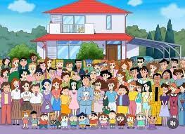

Shinchan , is a Japanese manga series written and illustrated by Yoshito Usui. Crayon Shin-chan made its first appearance in 1990 in a Japanese weekly magazine called Weekly Manga Action, which was published by Futabasha. Due to the death of author Yoshito Usui, the manga in its original form ended on September 11, 2009. A new manga began in the summer of 2010 by members of Usui's team,[5] titled New Crayon Shin-chan
An animated television adaptation began airing on TV Asahi in 1992 and is still ongoing on several television networks worldwide and has over 1000 episodes. The show has been dubbed in 30 languages which aired in 45 countries.[6] As of 2015, both the Crayon Shin-Chan and New Crayon Shin-Chan series have sold over 58 million copies, making it among the best-selling manga series in history.

Want To See A Short Video?
Here we go in 3..2..1...
List Of Movies
Shin-chan: Action Kamen vs. Demon (1993)
Shin-Chan: The Hidden Treasure of the Buri Buri Kingdom (1994)
Shin-chan: Unkokusai no Yabou (1995)
Shinchan: Hendarando no Daiboken (1996)
Shin-chan ankoku tamatama daitsuiseki (1997)
Shinchan: Dengeki! Buta no hizume daisakusen (1998)